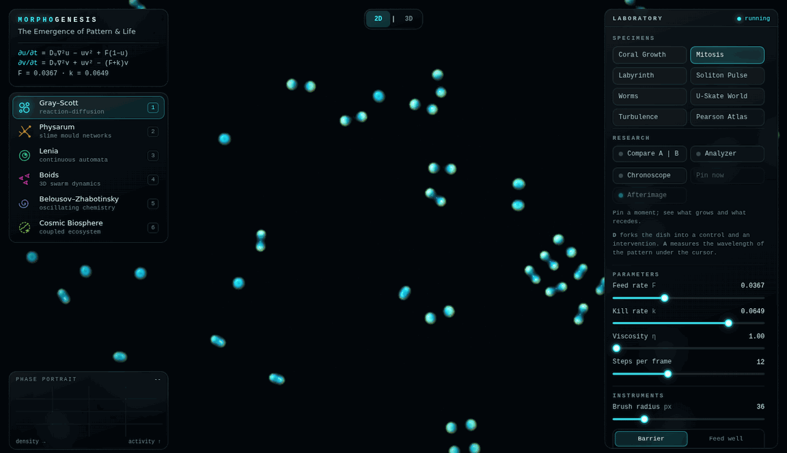

Morphogenesis
It opens full screen in this tab, on a recent desktop or laptop browser; phones and tablets get a touch layout. Sound starts on your first click or tap.

What it is
Morphogenesis is a laboratory for pattern that nobody draws. Each system follows a few local rules: chemicals that react and spread, cells that follow a scent, creatures that copy their neighbours. The stripes, spirals, networks and flocks are what those rules compute, moment by moment. Alan Turing named the process in 1952.
- Gray–Scott reaction–diffusion: spots that divide, stripes and labyrinths.
- Physarum: hundreds of thousands of slime-mould agents building transport networks.
- Lenia: continuous cellular automata, with creatures that glide and hold their shape.
- Boids: a murmuration in three dimensions, turning away from a falcon.
- Belousov–Zhabotinsky: an excitable chemistry of spiral waves.
- Cosmic Biosphere: the others coupled into one ecosystem, where chemistry feeds the slime and the slime feeds the flocks.
What you can do
- Paint into the dish, and place barriers, food and repellent.
- Tilt a dish into 3D relief and orbit it.
- Fork a dish into a control and an intervention, and watch the two diverge side by side.
- Measure a pattern’s wavelength, or pin a moment and see what grows and what recedes.
- Breed new phenotypes and trace them on a family tree.
- Take a guided tour that returns you to your own specimen.
- Save an exact specimen as a .morpho file, and open it again later.
- Export a 4K snapshot, a ten-second clip with its sound, or a printable 3D mesh, and play the dish as an instrument.
Running it
The laboratory is one HTML file with no dependencies. It makes no network requests, and a specimen leaves the page only when you save it. It needs WebGL2 with floating-point render targets. It has been tested in Chromium on a desktop and in phone and tablet emulation; Firefox, Safari and real phones have not yet been checked, and frame rates depend on the graphics chip.
Inside, press ? for every shortcut, or open the Field Guide for the mathematics behind each model.
How it was built
Each model follows its published source, from Turing’s paper to Reynolds on flocking and Chan on Lenia, and the Field Guide names them all. The shaders, sound and interface were written with AI assistance and are held to an automated suite of browser checks: a forked dish must match its original exactly, a saved specimen must reopen bit for bit, and the wavelength analyzer must read test patterns to within half a cell.